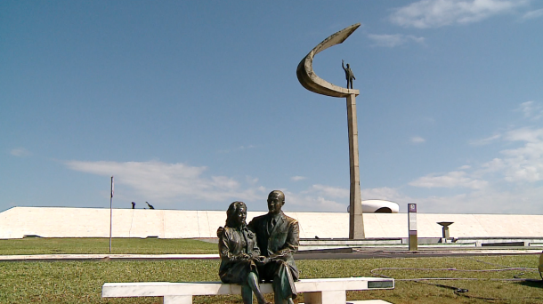

Memorial JK
Localização: Brasília - DF

Memória de Brasília
O Memorial JK preserva a memória do presidente Juscelino Kubitschek e da construção de Brasília, reunindo objetos, documentos e espaços expositivos. Consulte horários e condições de visitação antes de ir.